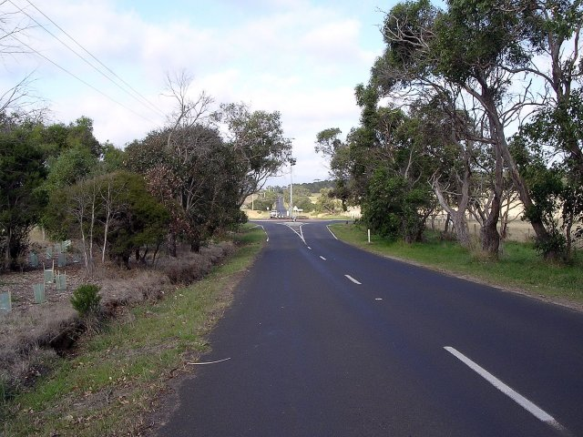
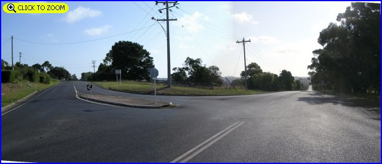
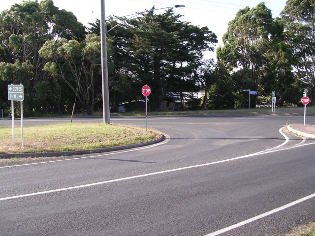
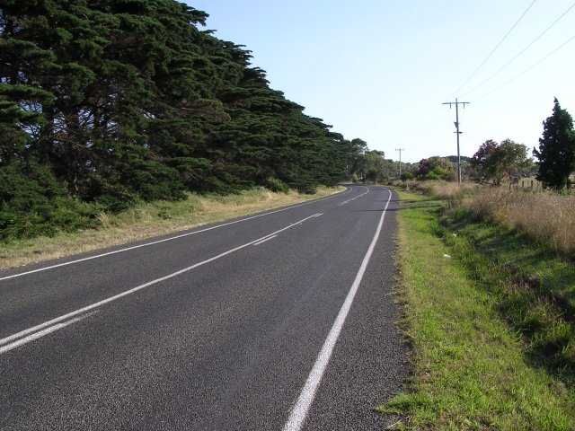
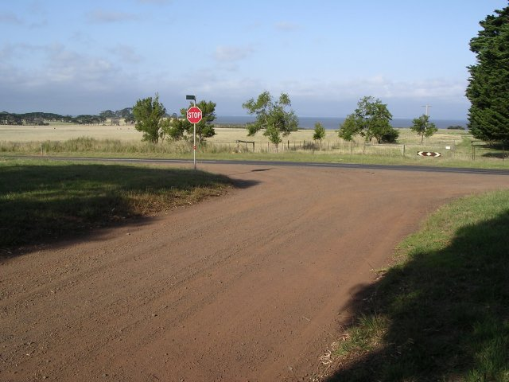

Numbers on the map represent the location where the photographs were taken. Scroll down to view the photographs.
Phillip Island (1925-34 TT circuit) - Ventnor Road to Harbison Road
|| Contents || Ventnor Rd. to Harbison Rd. | Harbison Rd. to Gentle Ann | Gentle Ann to Ventnor Rd. || Home ||
Numbers on the map represent the location where the photographs were taken. Scroll
down to view the photographs.
Return to racingcircuits.net's Photo Archive Main Index

1 - Ventnor Beach Road, Start/Finish area, approaching junction with
Phillip Island Road.

2 - Cowes-Rhyll Road.

3 - Rhyll corner. [Click here to zoom in]

4 - Rhyll corner from Rhyll-Newhaven Road.

5 - Left sweep before Harbison Road.

6 - Harbison Road. [Click here to zoom in]

7 - Harbison Road, still dirt.
Photographs and Text ©Neil Fackerell. Reproduced here with kind permission.